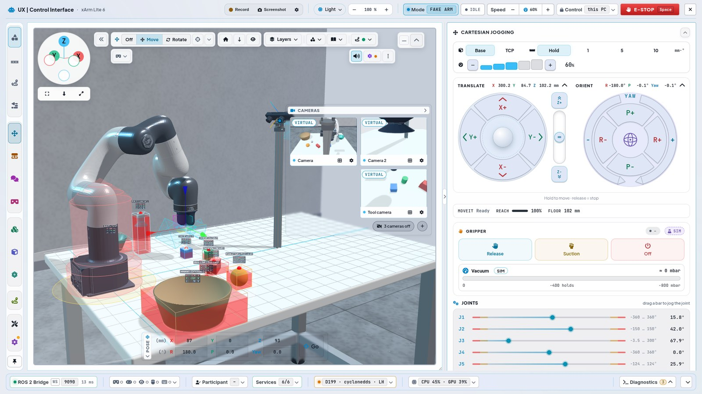
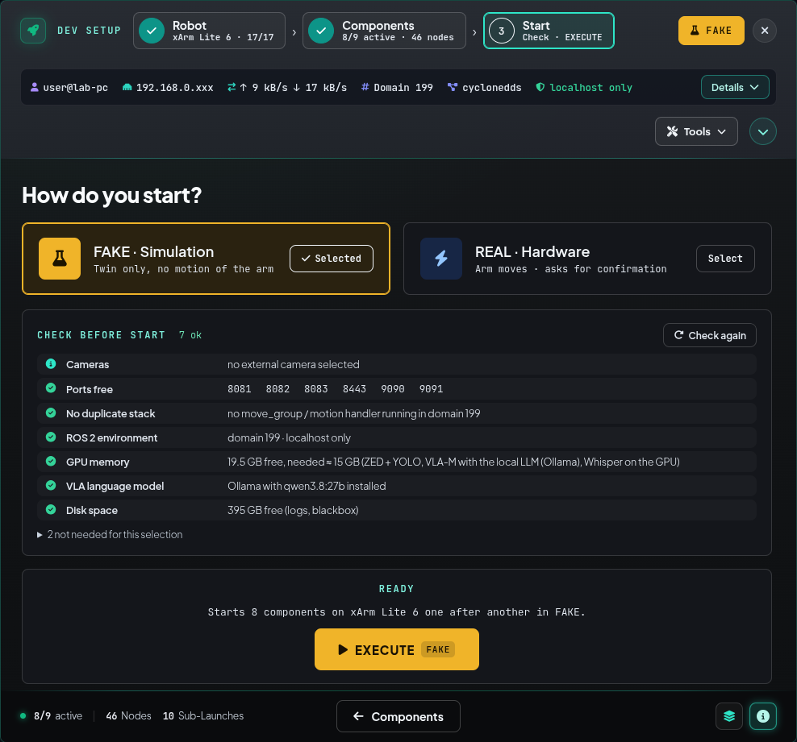
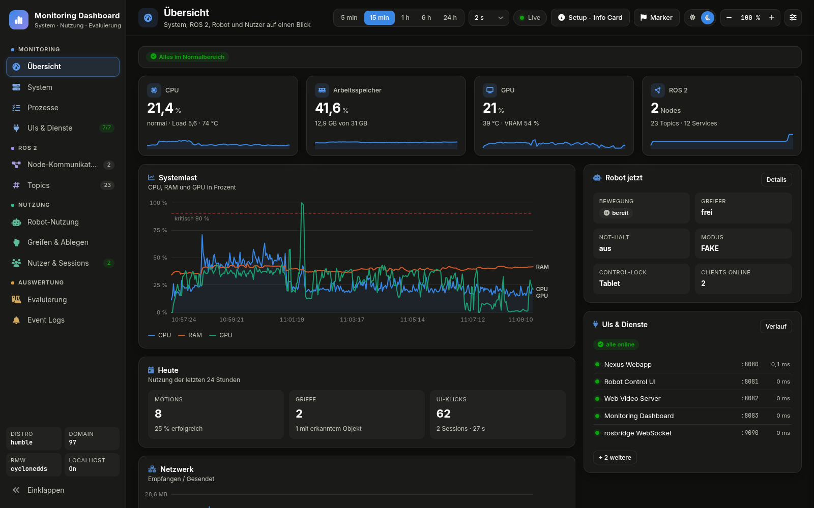
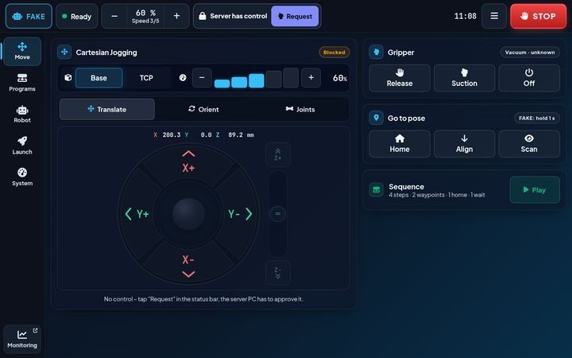
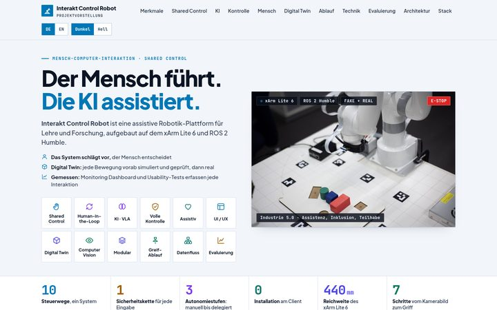
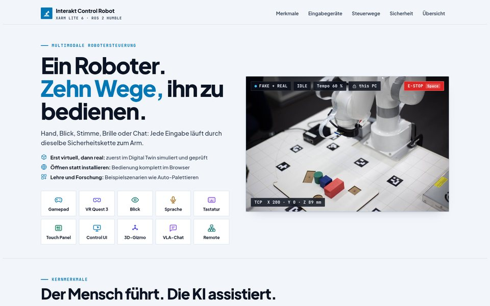
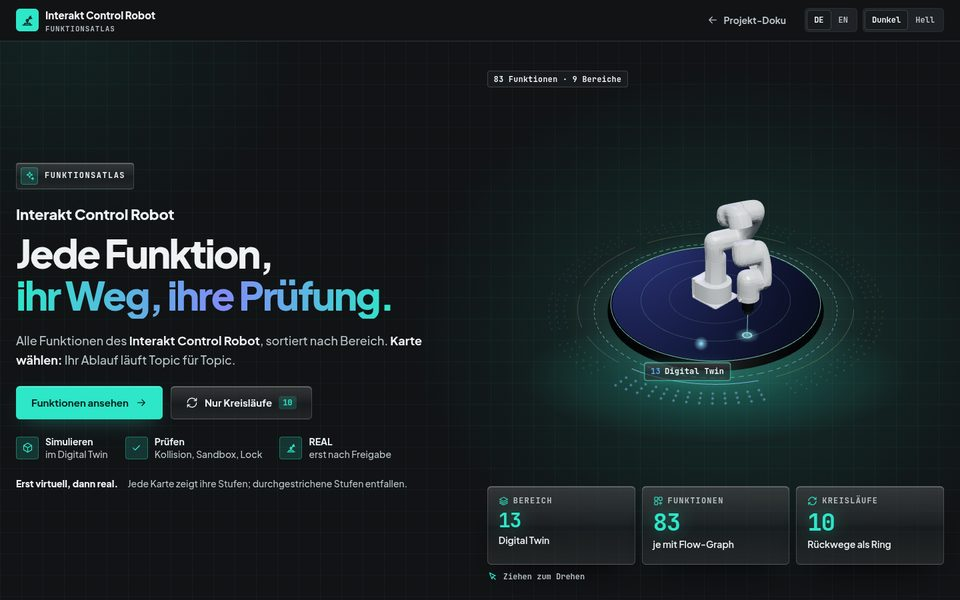
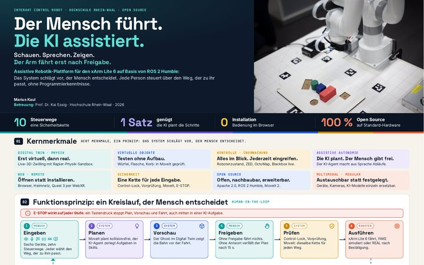

Sprache mit der Stimme
Sagen statt klicken: kurze Befehle lösen fertige Abläufe aus.
- Erkennung in 50–120 ms auf der GPU, Deutsch und Englisch
- Hörfenster 5 s nach dem Auslöser, kein Dauerbetrieb
Modulare, assistive Robotik-Plattform für Shared Control und Mensch-Roboter-Interaktion am xArm Lite 6, gebaut auf ROS 2 Humble für Lehre und Forschung. Sie verbindet Teleoperation, assistive KI und multimodale Eingabe mit Monitoring und Evaluierung; jedes Modul lässt sich für eigene Szenarien austauschen und anpassen.
Objekt anklicken: anheben · dann passende Form anklicken: ablegen · ziehen: Ansicht drehenObjekt antippen: anheben · dann passende Form antippen: ablegen · ziehen: Ansicht drehen
Was die Plattform kann: Prinzipien, Steuerwege, natürliche Bedienung, Web-Apps und alle Funktionen.
Sechs Prinzipien tragen die Plattform.
Jede Bewegung läuft zuerst im physikbasierten Digital Twin, danach derselbe Ablauf am xArm Lite 6.
KernmerkmaleZehn Steuerwege, von Gamepad und VR bis Blick, Sprache und KI-Chat.
FunktionsabläufeDer Arm fährt erst nach Freigabe; Eingreifen geht jederzeit.
Das PrinzipEin Webbrowser genügt, auf dem Endgerät wird nichts installiert. Bedienen, starten, überwachen und tippen: am PC, Tablet, Smartphone oder auf der Quest 3, lokal oder im Heimnetz.
Vier Web-AppsMonitoring Dashboard erfasst System und Nutzung; Usability-Tests mit SUS und NASA-TLX.
EvaluationslogikEingabegerät, Kamera, KI-Modell und Software-Baustein einzeln ersetzbar; Roboterarm geplant.
System-StackAssistive Robotik für echte Teilhabe.
E-STOP wirkt immer – in jeder Phase, über jeden Steuerweg
Sagen statt klicken: kurze Befehle lösen fertige Abläufe aus.
Aufgabe eintippen, Plan prüfen, ausführen. Die KI plant. Der Mensch gibt frei.
Hinschauen und halten: eine Fixation von etwa 1 s ersetzt den Klick.
Feinfühliges Verfahren in Echtzeit, mit Rückmeldung in der Hand.
Die Hand wird zum Werkzeug: Der TCP folgt dem Controller 1 : 1.
Die Zentrale: Alles, was der Roboter kann, an einem Ort.
Eine Aufgabe, mehrere Steuerwege im Vergleich: Reihenfolge per Latin Square, je Testperson und Durchlauf.
Sprechen, schauen, greifen: bedienen ohne Maus und Knopf.
Meta Quest 3: der TCP folgt der Hand 1 : 1, ohne Grip keine Bewegung.
VR mit Quest 3Tobii Pro Glasses 3: eine Fixation von etwa 1 s ersetzt den Klick.
BlicksteuerungWhisper auf der GPU: Befehle auf Deutsch und Englisch in 50–120 ms erkannt.
SprachbefehleQuest 3 ohne Controller: Pinch mit zwei Fingern greift.
geplantZED-Skelett: Zeigen wählt das Ziel, offene Hand pausiert.
geplantJede NUI läuft durch dieselbe Sicherheitskette wie Gamepad und UI: E-STOP wirkt immer.
Öffnen statt installieren.




Alle 83 Funktionen auf einer Karte.
Jede Funktion hat einen eigenen Link: present_function_atlas.html#<id>
Alle Unterlagen nach Rolle: vorstellen, verstehen, entwickeln, einrichten, bedienen.
Ein Roboter. Zehn Wege, ihn zu bedienen.

ProjektvorstellungDas Projekt interaktiv: 3D-Digital-Twin mit Pick & Place, Greif-Ablauf in 7 Schritten, KI-Agent, Evaluierung
HTML
Steuerwege & SicherheitsketteZehn Steuerwege, eine Sicherheitskette: Eingabegeräte, Kette zum Ausprobieren mit E-STOP, Fähigkeits-Matrix
HTML
FunktionsatlasAlle 83 Funktionen in 9 Bereichen, je mit Datenfluss und Topics; 10 Kreisläufe als Ring
HTML
Poster A2Das Projekt auf einer Seite, für Poster-Session und Druck
HTMLPromo-Video folgt
folgtPoster als PDF: poster_a2.pdf
Vier Fragen. Ein Projekt.
Offen, nachbaubar, erweiterbar.
47 Komponenten in sieben Schichten, 85 Verbindungen mit belegten Topics und Services; elf Befehlswege zum Abspielen, Schritt für Schritt.
Jeder Befehlsweg hat einen eigenen Link: operate_manual.html#p-<weg>
Vom Karton bis zur Abnahme.
Erst virtuell, dann real.
Vorführung, Fragen oder Nachbau im eigenen Labor: alle Unterlagen sind hier verlinkt, der Code steht unter Apache 2.0.